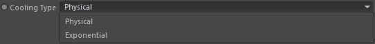

Params
Params
Temperature Channel
Takes a temperature or scalar channel that contains temperature information.
Fire Channel
Takes a fire channel that contains burning time information.
You must link the fire channel here if you are using a GOP::Combustion to simulate fire.
Cooling Type

Defines how the cooling should happen (in conjunction with the cooling Factor).
Physical
Temperature channel values are reduced based on the physical temperature cooling equations.
Exponential
Temperature channel values are reduced exponentially.
Factor

The cooling factor. In physical mode 100% does not mean the temperature will completely disappear.
Physical cooling can roughly be described as: the higher the temperature, the higher the reduction rate.